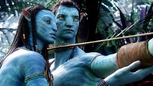

Vijftien jaar geleden bedacht Cameron het verhaal rond ex-marinier Jake Sully die in een rolstoel zit. Ondanks zijn handicap wordt hij gerekruteerd voor het Avatarproject omdat hij hetzelfde DNA heeft als zijn tweelingbroer die jarenlang voor deze operatie werd opgeleid, maar voortijdig kwam te overlijden. Een avatar is een wezen van vlees en bloed dat aangestuurd kan worden via de hersenen van slechts één specifiek persoon. Avatars hebben de uiterlijke en fysieke kenmerken van de inwoners van de planeet Pandora: de Navi. Op deze voor de mens giftige planeet ligt een enorme hoeveelheid unobtainium, een mineraal dat in het jaar 2154 extreem waardevol is en de mens koste wat kost wil bemachtigen om de energiecrisis op aarde te kunnen oplossen. Sully moet met zijn avatar, die kan overleven in de atmosfeer van de planeet, zien te infiltreren bij het Navivolk om zo het mineraal buit te kunnen maken. In het ruim driehonderd miljoen kostende (inclusief promotiekosten) Avatar heeft het verhaal een wat ondergeschikte rol. De film is een mix van uiteenlopende genres en is waarschijnlijk het best te omschrijven als een geanimeerd sciencefictionepos. En dus gaat het vooral om het avontuur en de totale filmervaring. Zoals gezegd heeft Cameron speciale technieken moeten laten ontwikkelen om de film te kunnen realiseren. Voor de avatars en het Navivolk waren performance-capturetechnieken nodig. Deze bestonden al, maar moesten drastisch gewijzigd en verbeterd worden. Onder andere om de avatars via hun ogen een ziel te geven. Voor het creëren van een volledige 3D-wereld waarin ook veel realtimebeelden zitten was een speciaal camerasysteem vereist en Cameron hielp dat mee ontwikkelen. Daarnaast moesten computersystemen geprogrammeerd worden die de geanimeerde 3D-beelden konden maken en alles konden verwerken tot één film. In een productieproces van vier jaar werd dit alles gerealiseerd. Al deze moeite loont, want visueel gezien is Avatar een alles overtreffend meesterwerk. De schoonheid en gedetailleerdheid van eigenlijk alles is zo immens en indrukwekkend dat je mond er bijna letterlijk van open valt. Bij een film als deze, vol met shots waar nooit een fysieke camera aan te pas is gekomen, is de cinematografie natuurlijk altijd een interessant punt. De shots waarin we meevliegen, vallen of rennen met de geanimeerde karakters zijn precies zoals je ze wilt hebben: prachtig, indrukwekkend, maar niet afleidend in hun extreemheid en zeker niet misselijkmakend. Al zal men de eerste paar minuten van de film misschien toch even moeten wennen aan de 3D-beelden (waarvoor wel degelijk een speciale bril nodig is). Een ander pluspunt zijn de authentiek aanvoelende videologs die we van Sully regelmatig te zien krijgen; ze bieden een goed tegengewicht voor de visueel overdonderende beelden. Opkomende ster Sam Worthington is een waardige hoofdrolspeler en draagt de film met verve. Hij wordt sterk bijgestaan door de relatief onbekende Zoe Saldana, die we overigens alleen als de geanimeerde Neytiri zien. De tijd dat mensen op basis van performance- capturetechnologie worden genomineerd voor awards lijkt hiermee aangebroken. Sigourney Weaver is de pinnige wetenschapper met een goed hart en bewijst wederom dat ze haar strepen meer dan verdient. De show wordt echter gestolen door de pas recent met Public Enemies (2009) echt bekend geworden Stephen Lang. Wat een fantastisch personage zet hij neer. Hij weet de bikkelharde, conservatieve kolonel Miles Quaritch net aan de goede kant van de karikatuurgrens te houden. Heerlijk. De film vertelt een klassiek verhaal en is inhoudelijk gezien een uitgesproken epos. Dit betekent inclusief de rechtlijnige, ietwat gemakzuchtige en voorspelbare narratieve kenmerken. De strijd tussen goed en kwaad is zoals in nagenoeg alle genregenoten uiterst zwart-wit. En verrassende plottwists hoef je ook niet te verwachten. Ook de thematiek is weinig verrassend: de mensheid leert niet van hun geschiedenis en houdt in hun zoektocht naar rijkdom geen rekening met de natuur (moeder aarde) of inheemse bevolking. Gelukkig ligt het er niet al te dik bovenop. Daarnaast doen bepaalde delen van het verhaal wel erg denken aan klassiekers als The Matrix en is Giovanni Ribisi, door zijn relatief jonge leeftijd en weinig indrukwekkende postuur, een tikkeltje miscast als missiebaas Parker Selfridge. Het frappante en tegelijk bewonderenswaardige van Avatar is dan weer dat het je eigenlijk allemaal niets uitmaakt. De film grijpt je in de eerste paar minuten vast en laat je 162 prachtige minuten lang niet meer los. Er werd vooraf voorspeld dat Avatar een mijlpaal gaat vormen. Dat we zouden gaan spreken van de tijd vóór en de tijd ná Avatar. Of dat zo zal zijn, is uiteraard lastig aan te geven. Eigenlijk moeten we ons daar ook niet aan wagen, de film moet dat zelf gaan bewijzen. Wat wel vast te stellen is, is dat Cameron voor een veel grotere impact zorgt dan Robert Zemeckis tot nu toe gedaan heeft met zijn performance-capture-3D-animatiefilms The Polar Express (2004), Beowulf (2007) en het recente A Christmas Carol (2009). Zemeckis gebruikte deels dezelfde technieken, maar zijn films zijn minder realistisch en schieten op narratief vlak stuk voor stuk tekort. Cameron is ook niet de meest vernieuwende verhalenverteller die er bestaat, maar hij is een groot filmmaker en bovendien de eerste die deze (nieuwe) 3D-capturetechnieken inzet ten behoeve van de totale filmervaring. Op die manier vormt Avatar zeker een nieuw begin in de filmgeschiedenis. Het is een filmervaring zoals je die zelden of nooit meemaakt. Doe jezelf dus niet tekort en ga Avatar zien in een IMAX 3D-zaal. Mijn excuses aan de overige bioscoopexploitanten, al is Cameron natuurlijk de ware schuldige.
